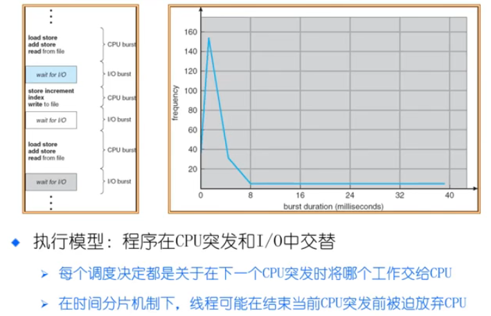

本文介绍进程的调度算法，包括进程调度的相关背景、调度准则，以及各种调度算法。
背景
上下文切换
- 将 CPU 从一个进程 / 线程切换到另一个进程 / 线程；
- 在切换过程中，当前进程 / 线程的执行上下文（CPU 状态）被保存到进程 / 线程控制块（PCB/TCB）中；
- 然后，下一个进程 / 线程的上下文被读取。
CPU 调度
- CPU 调度是从就绪队列中选择下一个要运行的进程 / 线程；
- 调度程序是一个内核函数，通过一些调度策略来选择进程 / 线程；
- 调度什么时候发生？
内核运行调度程序的条件
- 一个进程从运行状态切换到等待状态。
- 一个进程被终止。
满足上述其中一个条件，即可运行调度程序。
不可抢占系统
- 调度程序必须等待事件结束。
可以抢占系统
- 调度程序在中断事件被响应后执行。
- 当前进程从运行状态切换到就绪状态（进程时间片用完），或者一个进程从等待状态切换到就绪状态。
- 当前运行的进程可以被换出。
调度原则
调度策略
- 调度策略：
- 确定如何从就绪队列中选择下一个执行进程。
- 调度策略要解决的问题：
- 挑选就绪队列中的哪一个进程？
- 通过什么样的准则来选择？
- 调度算法：
- 在调度程序中实现的调度策略。
- 比较调度算法的准则：
- 哪一个策略或算法比较好？
程序执行模型
当某进程在进行 I/O 时，没有占用 CPU，此时希望其它进程能有效利用 CPU，使得 CPU 尽可能忙，充分利用资源。
评价指标
-
CPU 使用率：CPU 处于忙状态所占时间的百分比。
-
吞吐量：单位时间内完成的进程数量。
-
周转时间：一个进程从到达就绪队列到完成（结束）所花费的时间，包括所有等待时间。
- 周转时间 = 完成时间 - 达到时间
- 带权周转时间 = 周转时间 / 运行时间
-
等待时间：进程在就绪队列中的总时间。
- 等待时间 = 周转时间 - 运行时间，也等于开始执行时间 - 达到时间
-
响应时间：从一个请求被提交到产生第一次响应所花费的总时间。
评价指标不可兼得
人们通常需要「更快的」服务，但什么是「更快的」服务？
- 在传输文件时，高带宽是更快的；
- 在玩游戏时，低延迟是更快的；
- 这两个因素是独立的。
评价指标的期望：
- 减少响应时间：及时处理用户的输出，并尽快将输出提供给用户；
- 减少平均响应时间的波动：在交互系统中，可预测性比高差异性低平均更重要；
- 增加吞吐量：减少开销（操作系统开销、上下文切换）、高效利用系统资源（CPU、I/O 设备）；
- 减少等待时间：减少每个进程的等待时间。
其实这些指标是有矛盾的，比如 很难同时满足 最小响应时间和最大吞吐量，要么只顾及某一点，要么对两点进行折中。
- 吞吐量是操作系统的计算带宽。
- 响应时间是操作系统的计算延迟。
将「公平」作为重要指标
- 保证每个进程占用相同的 CPU 时间。
- 这公平吗？如果一个用户比其他用户运行更多的进程怎么办？
- 保证每个进程等待相同的时间。
- 公平通常会增加平均响应时间。
调度算法
先来先服务算法（FCFS）
先来先服务算法（First Come First Served, FCFS）为非抢占式算法。
调度策略：依据进程进入就绪状态的先后顺序调度。
- 如果当前运行的进程进入阻塞或结束状态时，就绪队列中的下一个进程会得到 CPU。

如上图，如果就绪队列前面的进程执行时间较长，周转时间会边长，如果用户请求后面的进程，可能会等待较长时间。
算法特点
优点：简单。
缺点：
- 平均等待时间波动较大；
- 花费时间少的任务可能排在花费时间长的任务后面；
- 可能导致 I/O 和 CPU 之间的重叠处理（一起闲、一起忙）：CPU 密集型进程会导致 I/O 设备闲置时，I/O 密集型进程也在等待。
短进程优先算法（SPN/SRT）
在 FCFS 算法中可以观察到，如果把短进程排到前面，周转时间会下降。因此，短进程优先调度算法被提出。
- 短进程优先算法：Shortest Process Next, SPN
- 短作业优先算法：Shortest Job First, SJF
- 最短剩余时间优先算法：Shortest Remaining Time, SRT
SPN 和 SJF 是同一个算法的两种不同叫法，为非抢占式算法；而 SRT 是可抢占式 SPN 算法。
短进程优先算法 调度策略：按照预测的完成时间来将任务入队（队列内时间越短的任务越靠前）。
如上图，就绪队列中的四个进程 w, x, y, z 的完成时间分别是 9, 12, 34, 62，因此进程 w 在队列头、进程 z 在队列尾。
在抢占式 SRT 调度算法中，如果发现某个进程比当前进程的剩余时间片还短，则 抢占 CPU 并运行该进程。在 SPN 调度算法中，不可抢占，会将该进程放到就绪队列最前面。
最优平均周转时间
短进程优先算法具有最优平均周转时间。
如上图，如果按进程的完成时间从短到长来调度，可以证明其具有最优的平均周转时间。其它情况下，如将 P3 安排在 P5 后运行，则不具有最优的平均周转时间。
算法特点
SPN (SJF) 调度算法的问题：
- 可能会导致饥饿：当有连续的短任务流时，长任务可能会被短任务持续占用 CPU，导致长任务等待时间增加，可能出现饥饿现象。
- 需要预测下一个 CPU 突发持续时间（进程在一次调度中连续占用 CPU 的时间长度）。
- 简单的解决：询问用户。但如果用户欺骗呢？就杀死进程！那如果用户不知道怎么办？
进程执行时间预估
用历史 的执行时间 和预估时间 来估计未来 的执行时间 。其中， 为第 次 实际的 CPU 突发的持续时间， 为第 次 预估的CPU 突发的持续时间。
最高响应比优先算法（HRRN）
最高响应比优先算法（Highest Response Ratio Next, HRRN）为非抢占式调度算法。
调度策略：选择就绪就绪队列中响应比最高的进程。其中，响应比 ， 表示等待时间（waiting time）， 表示服务执行时间（service time）。
算法特点
- 在短进程优先算法的基础上改进，关注进程的等待时间：
- 不再仅仅考虑执行时间 参数，也增加了等待时间 参数。
- 防止长任务被无限期推迟。
- 依然需要预估服务执行时间。
时间片轮询算法（RR）
时间片轮询算法（Round Robin, RR）将为每个进程被分配一个固定的时间片，当一个进程的时间片用完后，它会被剥夺 CPU，并放到就绪队列的末尾，等待下一次调度。
这种方式使得每个进程能够公平地分享 CPU 时间，避免了长时间的饥饿现象。同时，时间片轮转算法也 具有抢占性，因为当一个进程的时间片用完时，它可以被剥夺 CPU，并让其他进程获得执行的机会。
时间片轮询算法 调度策略：使用时间片和抢占来轮流执行就绪队列中的任务。一个进程的时间片用完后，按 FCFS 算法切换到下一个就绪进程。

轮询算法示例
假设有如下进程：
| 进程 | 执行时间 |
|---|---|
| P1 | 53 |
| P2 | 8 |
| P3 | 68 |
| P4 | 24 |
假设为进程分配的时间片为 20，进程没有 I/O 等待，那么进程调度的甘特图为：
1 | | P1 | P2 | P3 | P4 | P1 | P3 | P4 | P1 | P3 | P3 | |
每个进程的等待时间为：
平均等待时间为：
一般 FCFS 算法比 RR 算法的平均等待时间更短——这是因为 FCFS 中没有频繁的上下文切换（一个进程执行完毕后，才会切换一次上下文，执行下一个进程）。但是，FCFS 达不到像 RR 那样及时响应每一个进程。
算法特点
- RR 花销：额外的上下文切换（以保证每个进程都有机会被执行）。
- 若时间片分配太大：
- 进程等待时间过长；
- 极限情况下会退化成 FCFS 算法。
- 若时间片分配太小：
- 反应迅速；
- 吞吐量因大量的上下文切换开销而受到影响。
目标：
- 选择一个合适的时间片大小
- 经验规则：维持上下文切换的开销在 1% 以内（占程序运行），是可以接受的。
多级队列（MQ）
多级队列（Multilevel Queues, MQ）将进程放在多个就绪队列，每个队列具有不同的优先级。
就绪队列被划分成多个独立的队列：
- 比如，前台（交互）、后台（批处理）
每个队列拥有自己的调度策略：
- 比如，前台（RR）、后台（FCFS）
调度必须在不同的队列间进行：
- 以固定优先级方式调度：先处理前台队列，再处理后台队列。
- 可能造成饥饿。
- 以时间片轮询方式调度：每个队列都得到一个确定的能够调度其进程的 CPU 总时间。
- 比如，80% 给使用 RR 的前台，20% 给使用 FCFS 的后台。
算法特点
- 保证公平性的同时，尽量减少进程的等待时间。
- 高优先级队列中的进程可以立即执行。
- 低优先级队列中的进程可以获得更多的时间片来执行，从而增加了它们完成的机会。
- 可以根据进程的行为动态地调整优先级。
多级反馈队列（MFQ）
在多级队列中，各个队列之间是没有交互的。进一步改进，进程可在不同队列间移动的多级队列算法 ，即多级反馈队列（Multilevel Feedback Queues, MFQ）算法，它 可以根据情况（反馈）调整进程的优先级、队列。
- 初始时，所有进程都被放入最高优先级的队列中。
- 当一个进程获得执行时，它被分配一个时间片来执行，如果在时间片用完之前进程没有完成，它将被移到下一个较低优先级的队列中。
- 如果一个进程在一个较低优先级队列中 等待了一段时间仍然没有执行，它可以被提升到更高优先级的队列中。

算法特点
优点：
- CPU 密集型任务的优先级下降很快；
- I/O 密集型任务停留在高优先级（这是因为这种进程存在 I/O 等待，分配给它的时间片用不完，不会被降级）。
调度算法总结
| 调度算法 | 特点 | 是否可抢占 | 是否饥饿 |
|---|---|---|---|
| 先来先服务（FCFS） | 不公平，平均等待时间较长 | 否 | 是 |
| 短进程优先（SPN / SRT） | 不公平，平均等待时间较短，需要预估进程执行时间 | 否 | 是 |
| 最高响应比优先（HRRN） | 不公平，考虑等待时间和执行时间的比例，防止长任务被无限期推迟 | 否 | 是 |
| 时间片轮循（RR） | 公平，但是平均等待时间较长 | 是 | 否 |
| 多级反馈队列（MFQ） | 结合多种算法，根据进程需求动态调整优先级 | 是 | 否 |
| 公平共享调度（FSS） | 公平是第一要素 | 是 | 否 |
参考资料：
1：https://github.com/OXygenMoon/OperatingSystemInDepth
2：https://blog.csdn.net/weixin_53407527/article/details/125097356